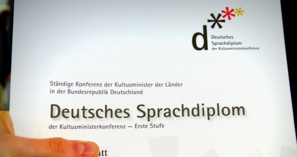

DEUTSCH

IDIOMA
El Departamento de Alemán establece como meta fundamental la enseñanza del idioma alemán. Para ello, desde el Nivel Inicial promovemos el contacto de los alumnos con la lengua por medio de juegos y canciones, haciendo hincapié en el desarrollo de la expresión oral. A partir del Nivel Primario, se fomenta el desempeño de los alumnos en las cuatro competencias lingüísticas, a saber, la lecto-comprensión, la expresión escrita, la expresión oral y la comprensión auditiva. Con el ingreso al Nivel Secundario, el Departamento profundiza la enseñanza de la lengua a través de la preparación de los estudiantes para rendir exámenes tanto nacionales como internacionales de diversos niveles, a la vez que ofrece la posibilidad de viajes de estudios a Alemania. Para las familias y el personal del colegio, por su parte, el Departamento cuenta con una oferta de cursos de distintos niveles a fin de que todos puedan formar parte de las propuestas de la Escuela y de la comunidad alemana en Argentina.
SPRACHE
Die Deutsche Abteilung setzt sich zum Ziel die deutsche Sprache professionell zu vermitteln. Ab dem Kindergarten beginnend wird der Kontakt mit der deutsche Sprache in Form von Spielen und Liedern gewährleistet. Im Fokus steht hierbei der mündliche Ausdruck. Mit dem Eintreten in die Primärstufe werden die vier linguistischen Kernkompetenzen ausgebildet: Leseverstehen, schriftlicher Ausdruck, mündlicher Ausdruck und Hörverstehen. In der Sekundarstufe rückt die Vorbereitung auf nationale und internationale Deutschprüfungen unterschiedlicher Niveaustufen in den Vordergrund, mit dem Ziel die deutsche Sprache zu professionalisieren und zu vertiefen. Zudem wird ein Schüleraustausch nach Deutschland angeboten. Sowohl die Lehrkräfte, als auch die Familienmitglieder haben die Möglichkeit Deutschkurse unterschiedlicher Niveaustufen an der Schule zu absolvieren, um an den Aktivitäten der Gartenstadtschule und der Deutschen Gemeinde in Argentinien teilnehmen zu können.
CULTURA
Dado que otro de los objetivos primordiales del Departamento es fortalecer el vínculo entre la cultura argentina y la germana, también fomentamos el contacto e intercambio con otras escuelas alemanas dentro de la Argentina y la participación en actividades culturales y recreativas organizadas por la AGDS (Comunidad de Escuelas Argentino Alemanas). Estimulamos asimismo el contacto auténtico con la actualidad de Alemania, tanto desde el contenido curricular como desde actividades extraprogramáticas, a la vez que a partir de 2018 ofrecemos en el Nivel Primario una hora más de alemán a través del Taller de Cultura Alemana a fin de que nuestros estudiantes tomen conocimiento de las tradiciones alemanas desde una edad temprana y aprendan a relacionarse con el idioma desde otra perspectiva.
KULTUR
Eines der wesentlichen Ziele der Deutschen Abteilung ist die Stärkung und Vertiefung der deutsch-argentinischen Freundschaft, so unterstützen wir auch den Austausch mit anderen deutschen Schulen in Argentinien und die Teilnahme an kulturellen und unterhaltsamen Veranstaltungen, welche von der AGDS organisiert werden. Die Förderung des authentischen Kontakts mit dem aktuellen, modernen Deutschland, sowohl im Unterricht als auch mittels ausserschulischer Aktivitäten, steht im Zentrum. Seit 2018 bieten wir in der Primärstufe eine zusätzliche Deutschstunde an, welche das Ziel verfolgt, im Rahmen der Lernwerkstatt den Schülerinnen und Schülern ab einem frühen Alter an die deutschen Traditionen und Gewohnheiten zu vermitteln. Hinzu kommt, dass die Schülerinnen und Schüler lernen, sich mit der deutschen Sprache auf eine andere Art und Weise, als im klassischen Unterricht, auseinanderzusetzen.
FUTURO
Finalmente, el Departamento incentiva a nuestros egresados a continuar sus estudios de la lengua alemana no sólo dentro de la Argentina sino también en el exterior, en países de habla germana donde puedan formarse profesionalmente con vistas a insertarse en un mercado laboral crecientemente competitivo. También nuestros docentes cuentan con el apoyo de la Institución para continuar capacitándose ya dentro de la Argentina, ya en Alemania, a fin de seguir formándose de manera constante en las áreas de didáctica y pedagogía.
ZUKUNFT
Schlussendlich motivert die Deutsche Abteilung die Abiturienten sich nach Beendigung der Sekundarstufe nicht nur in Argentinien sondern auch in deutschsprachigen Ländern fortzubilden. Die Idee hierbei ist die Schüler zu unterstützen eine professionelle Weiterbildung zu geniessen, um sich auf einem wettbewerbsorientierten Arbeitsmarkt zu behaupten. Auch die Lehrkräfte werden in sprachfördernden Angelegenheiten unterstützt, sei es innnerhalb Argentiniens, oder ausserhalb. Somit wird eine ständige Fortbildung der Lehrkräfte garantiert.